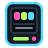

ZelunavoStilkarte · Version 1.0Snackautomatenbetrieb · Büroassistenz
Dunkel. Klar.
Mit Neon als Signal.
Ein ruhiger Arbeitsraum für den Monatsabschluss: Kontoauszug auswählen, Unklarheiten prüfen, Unterlagen ergänzen und die Abschluss-PDF erstellen.
Farbpalette
Hintergrund
#0B1016Karte
#151C26Haupttext
#E8ECE8Nebentext
#A7B3B9Neonpink · Marke
#FF5AAENeongrün · Aktion
#B7F66BNeonblau · Info
#57D8FFWarmgelb · Barumsatz
#FFD166So könnte die App wirken
Fiktiver Monat · September 2026
Monatsabschluss
Prüfe noch einen Beleg. Danach ist die Abschluss-PDF bereit.
- ✓ Kontoauszug
- 2 · Belege prüfen
- 3 · Abschließen
Barumsatz12.834,00 €
Bankeinzahlung12.364,00 €
Wechselgeld470,00 €
Gestaltungsregeln
- Systemschrift, 16 px Grundgröße, 14 px Mindestgröße für Hilfen.
- Nur eine klare Hauptaktion pro Ansicht; Neongrün mit dunkler Beschriftung.
- Pink für Marke und aktive Schritte; Blau für Informationen und Nebenaktionen.
- Kassenbuch: Gelb = Barumsatz, Grün = Einzahlung, Blau = Wechselgeld.
- Farbige Status immer zusätzlich als Text benennen.
- Buttons mindestens 44 px hoch; gut sichtbarer Tastaturfokus.
Neon ist ein Signal. Die Tabellen und Formulare bleiben ruhig und lesbar.
Bild, Logo und Ausdruck
Das neue Logo zeigt einen stark vereinfachten Snackautomaten. Drei Produkte tragen die Neonfarben; der Automat bleibt auch klein erkennbar. Fotos oder Illustrationen gehören höchstens auf eine Startseite, nicht zwischen Buchungen und Belege.
Die App kann dunkel sein. Ausgedruckte Kassenbücher, Stundenzettel und die Abschluss-PDF bleiben hell mit dunkler Schrift und sparsamen Akzenten.